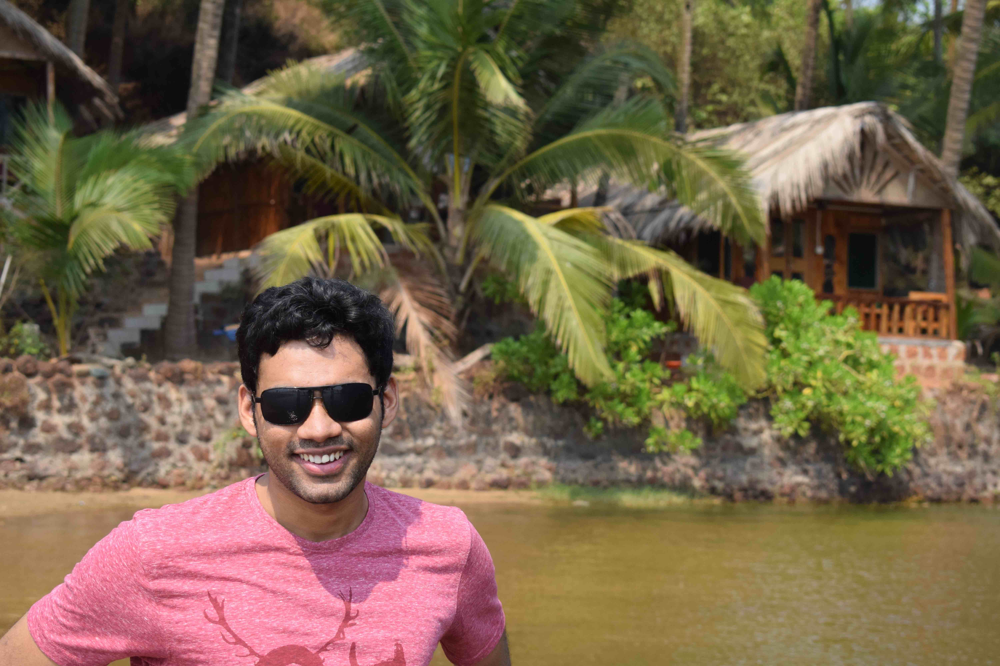

I plan to finish my PhD soon and I am looking for job opportunities! Please feel free to ping me if you have any offer that suits me 😀
I am a PhD student with Computer Science department at IIT Bombay advised by Prof. Sunita Sarawagi and Prof. Soumen Chakrabarty. I work in the area of Applied Machine Learning with emphasis on problems arising due to domain shifts.
My PhD is funded by Google PhD Fellowship.
Before joining IIT Bombay, I had spent two wonderful years as a research member staff at Amuse Labs contributing features to a digital archival project called ePADD.
I graduated with computer science majors from IIT Mandi and that is where I found my love for trekking.
An overview of my research and background can be found in Publications and CV respectively. You can reach me using any of the contact pointers provided in the footer.